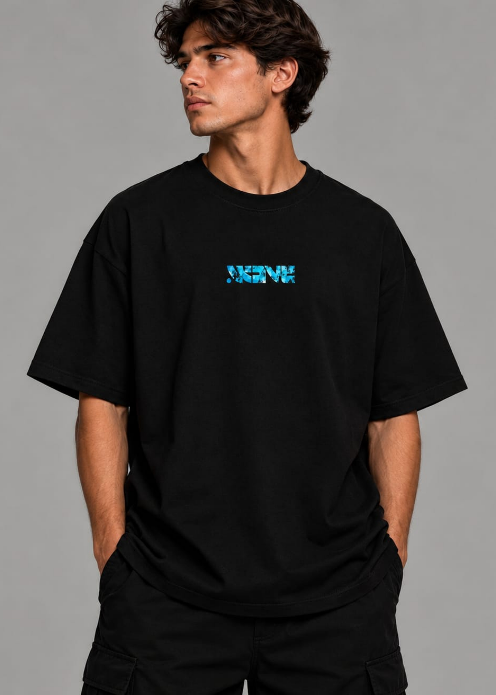

Louvor Intenso
Adoração vibrante e ambiente da presença de Deus.
O Wave é o ministério de adolescentes da igreja Verbo da Vida em Bauru. Um lugar de louvor intenso, palavra viva, gincanas e amizades reais.
Somos adolescentes que decidiram viver algo real com Deus. No Wave, construímos amizades, crescemos na Palavra e descobrimos que seguir Jesus é a melhor aventura.
ENCONTRE SEU LUGAR NO WAVE ↗Adoração vibrante e ambiente da presença de Deus.
Dinâmicas interativas conectadas com o tema da noite.
Direcionamento prático para a sua identidade e propósito.
Tempo de comer algo juntos e fechar o sábado com chave de ouro.
Às 19h30 estamos de portas abertas para te receber! Veja o cronograma completo do que rola:
A igreja já está aberta! Venha chegando para bater papo, receber todo mundo e aguardar o início.
Trinta minutos de adoração vibrante, conectando nossos corações ao Pai logo no começo da noite.
Dinâmicas e gincanas super divertidas envolvendo diretamente o tema da ministração da noite.
Mensagem profunda, prática e direcionada para a realidade dos adolescentes, direto ao ponto.
Para fechar a noite, nos reunimos para comer alguma coisa juntos e dar muitas risadas!
Temos departamentos incríveis dentro do Wave. Escolha onde você gostaria de servir e coloque seu nome na lista!
Captura de fotos, stories, cobertura e edição para as redes sociais.
Iluminação, câmeras, mesa e suporte técnico dos encontros.
Apoio, organização e cuidado para que tudo aconteça da melhor forma.
Ministração através da música, servindo e preparando esse momento.
As músicas que fazem parte dos nossos sábados, reunidas em uma só playlist. Do louvor intenso aos momentos de adoração, leve a atmosfera do WAVE para onde você for.

FRENTEVista o propósito! Desenvolvida com tecido 100% algodão de alta gramatura. Perfeita para usar nos cultos de sábado no Wave. Veja os detalhes da frente e das costas.
Fique por dentro de todos os avisos do culto de sábado, fotos, gincanas, devocionais e novidades da nossa galera em Bauru.
◉ ENTRAR NO GRUPO DO WHATSAPPTem um lugar esperando por você. Chegue junto!
Endereço:
R. Florentino Alexandrino de Oliveira, 4-15 – Jardim Vitória,
Bauru - SP, 17056-493
Horário do Culto:
Sábados, das 19:30 às 21:30
Não! O Wave é para todos os adolescentes. Pode chegar, chamar os amigos e viver essa experiência com a gente.
As portas abrem às 19h30. Chegue um pouquinho antes para conversar com a galera e aproveitar tudo desde o começo.
A participação no culto é gratuita! Venha como você está. O lanche e outras atividades podem ter avisos específicos em cada sábado.
Ficamos na Rua Florentino Alexandrino de Oliveira, 4-15 – Jardim Vitória, Bauru - SP.
Quer saber mais sobre o Wave Bauru? Fala com a nossa equipe!